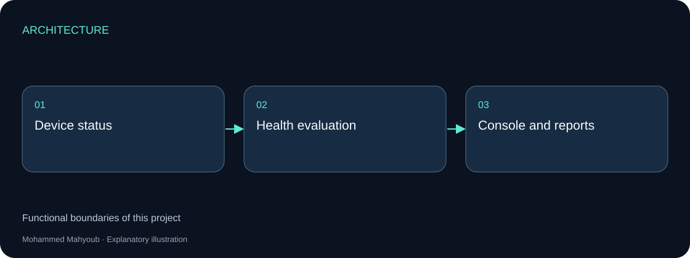
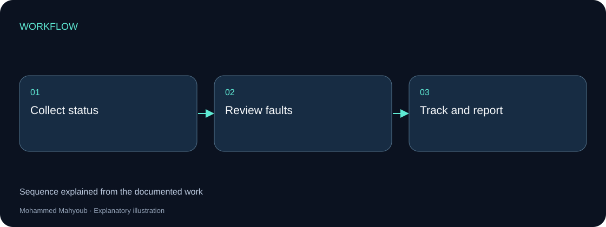

Desktop Software · Operational Diagnostics
Monitoring & Diagnostics Console — VB.NET
Built a WinForms dashboard for multi-site system monitoring, real-time diagnostics, automated health evaluation, issue tracking and technical reporting.
Implemented Project
System architecture

Implementation scope
The console presents device and system condition in one operational view. Its role is to support fault recognition, diagnosis and follow-up across multiple sites.
Engineering approach
Status, health assessment and reporting are separate responsibilities. The available interface screenshot documents the console; application source code and deployment configuration are not published.

Reading the original interface
The source poster groups a main monitoring dashboard, site detail and rules analysis, a connection or fault-test panel, and an event / failure-tracking view. These areas support recognition, diagnosis and follow-up. The preview is low resolution: small labels, exact values and device protocols cannot reliably be recovered from it.
Proposed functional design
Collect observations through device-specific adapters on a background scheduler. Each observation records the check type, timestamp, result and data quality. A separate rule engine evaluates condition; the interface displays both condition and the time of the last successful observation.
Use healthy, warning, critical, unknown and stale states. A failed network check is evidence of an unsuccessful check, not sufficient proof of a hardware failure. Expired data must stop appearing as a fresh healthy reading.
Records and operational flow
Suggested entities are Site, Device, ProbeResult, HealthRule, Event, Incident and IncidentAction. A device has many observations; several repeated events may belong to one incident. Record state transitions and aggregate repeat failures to avoid creating an incident on every polling cycle.
Verification scenarios
Exercise unavailable devices, slow responses, stale observations, database failure, recovery and shutdown during an active check. The interface should remain responsive and display uncertainty explicitly. No measured uptime or response-time benchmark is inferred from the screenshot.
Source context
Original project posters and interface screenshots are identified separately from explanatory source diagrams. The gallery documents this project only. Open any figure to inspect it at full available resolution.